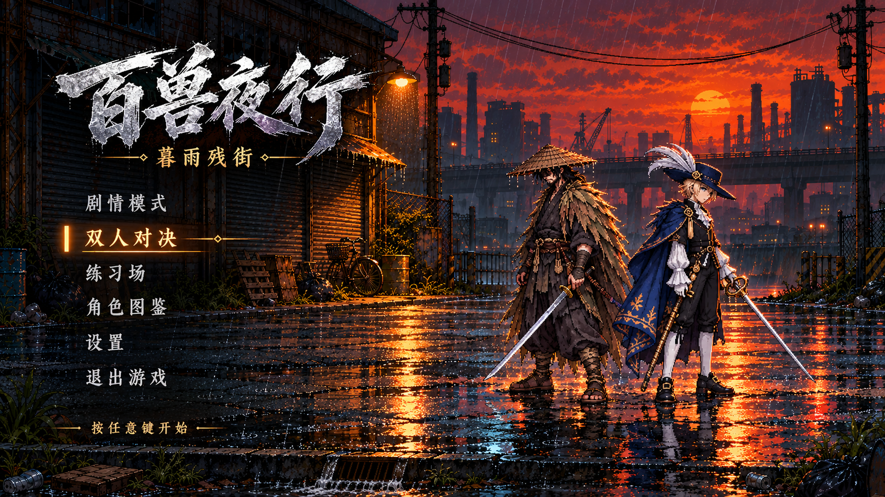
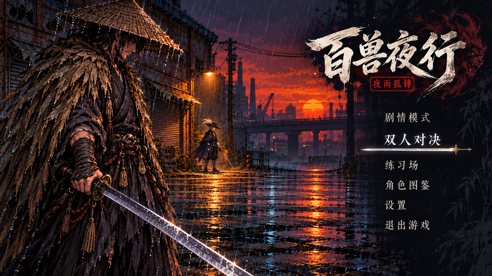
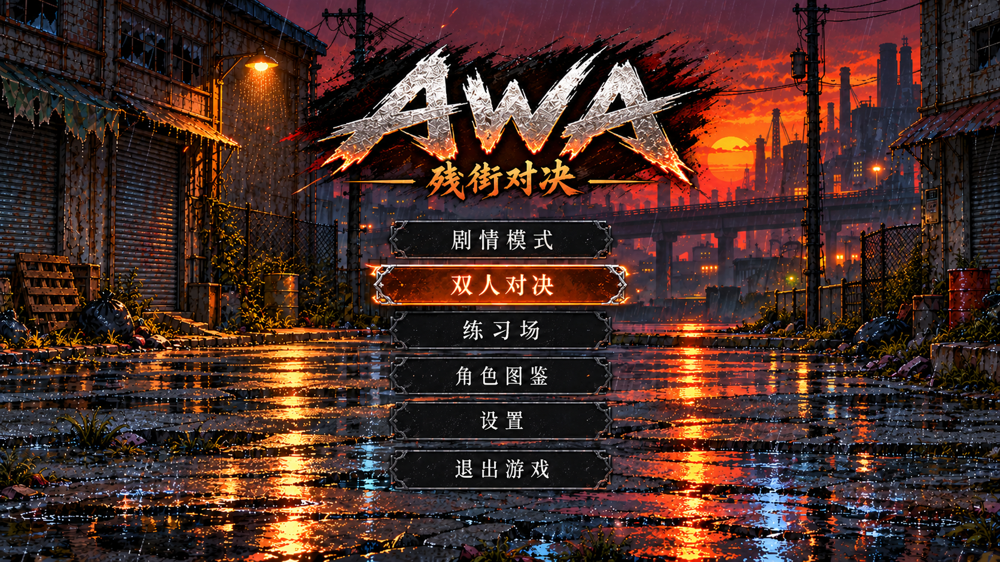

百兽夜行 · 标题与主界面方案
沿用已选C「工业街口」的黄昏雨景。C方案已按要求更新为AWA标题，并移除全部人物。A、B保留为早期对照方案。
A · 百兽夜行：暮雨残街
雨夜电影感。左侧标题与简洁菜单，右侧人物和工业雨街，暖橙与深蓝对比。适合强调场景氛围。

B · 百兽夜行：夜雨孤锋
江湖剑客风格。剑客占据主视觉，右侧菜单与书法标题，冷色雨夜配少量朱红。适合强调角色故事。

C · AWA：残街对决
格斗游戏风格。移除全部人物与武器，工业雨街完整展开；顶部AWA标题，中央格斗风菜单。

以上为视觉候选图，尚未替换主菜单。选定后将菜单文字与按钮实现为真实可交互界面，并接入动态雨水和选中反馈。